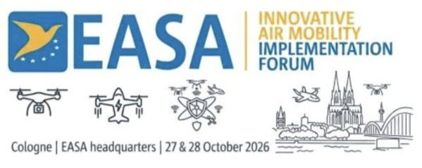

Seguimos el IAM Implementation Forum de EASA
Mañana arranca en Colonia el EASA Innovative Air Mobility Implementation Forum 2026, con el lema «From rules to reality: accelerating Innovative Air Mobility in Europe». Lo seguiremos con especial atención al stream de eVTOL.
Esto es lo que trae la primera jornada, el martes 27 de octubre:
- 09:35 · Apertura. Florian Guillermet, director ejecutivo de EASA, abre el foro hablando de la siguiente fase de la movilidad aérea innovadora en Europa.
- 09:55 · Panel: del marco regulatorio a la realidad operativa. Participan la Comisión Europea, el Ministerio de Transporte alemán, EUROCONTROL, FuVeX y Odys Aviation, socio de VERTI-GO.
- 11:00 · Panel: qué tiene que pasar en los próximos 5 años para escalar la IAM en Europa, con Vega Vertical Gateway, la Irish Aviation Authority, ERC System, STRADAai y Urban Ray.
- 13:00 · Taller: ampliar las operaciones BVLOS mientras se despliega el U-space, con la participación de AESA.
- 14:15 · Debate sobre la conspicuidad: cómo hacer visibles a todos los usuarios del espacio aéreo para que «lo que se ve, se pueda evitar».
- 15:45 · Stream VTOL: marco de certificación eVTOL. Volker Arnsmeier, Oswaldo López Blas y José Martín Sanz, de EASA, presentan el estado de la RMT.230, los medios de cumplimiento de la SC-VTOL y la aprobación de condiciones de vuelo para el permiso de vuelo. Es una sesión clave para entender el camino hacia la entrada en servicio de los eVTOL.
El miércoles el stream eVTOL continúa con paneles sobre primeras operaciones y vertipuertos, la contribución de la industria a la certificación y la I+D necesaria para la entrada en servicio.
En los próximos días compartiremos las principales conclusiones. Ver la agenda completa en la web de EASA.